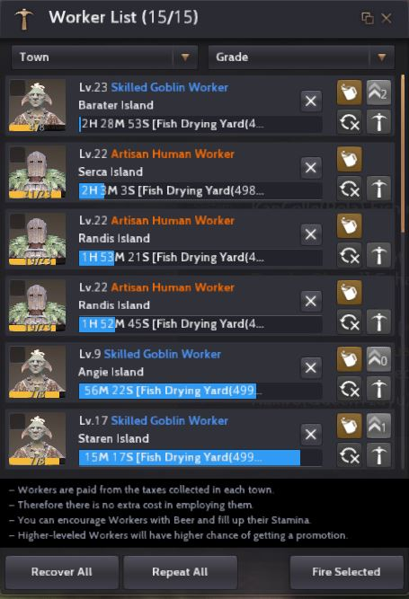

You will not believe how good is Good Feed.
Good feed is a food for your hungry pets and it is one of my silver making business. I mass produce this goodness to earn decent money. I decided to focus on this alone because I thought if I do all sorts of life skill activities and grind at the same time I'm afraid I'll burn myself out and get nowhere. To do this business you'll need to meet the following requirements:
Up to 100 CP to be invested in :
Why Good Feed?
First of all every players in black desert owns at least 3 to 5 pets that they need to feed on a daily basis. This means that good feed is a daily necessity so you can expect player to always buy them in central market which explains why it sells very fast on top of that it's affordable.
Go to Port Epheria to start investing your contribution points. First is lodging and storage slots. Make sure you invest only on what you need so you can save a few cp.

Then invest cp at port epheria fish drying nodes like this
Now you need to hire workers make sure you have enough energy and go for Skilled Human or Skilled Goblin and remember for giants go only for Artisan Giant worker if you're lucky to roll one. Use the FIND NPC and go to work supervisor.
You also need to do the same thing in Velia. You want to invest in all fish drying nodes because it takes your workers 3 to 4 hours to finish working on the dried fish so having more nodes is good. I am really short in CP so I haven't invested in all fish drying nodes but here is some of it velia.
One last node you need to invest on is the wheat nodes at farms below Heidel. You will grind wheat to make flour which is one of the ingredients of good feed so having more wheat node is great.
Now that you're all set and your workers are working. The next thing you need to do is gather Lamb Meat so you can mass produce the good feed.
Go to Lynch Ranch North West of Heidel Town to start butchering Lambs. Make sure to bring your butchering knife and once you're done or out of energy you can start grinding wheat for flour. Here is the recepi for good feed: Lamb Meat x6 pcs, Dried Fish x2 pcs, Flour x4 pcs and Mineral Water x3 pcs. You can buy Mineral Water from Inn Owners of every town.
Time to Cook it!
Your profit depends on how much lamb meat you can gather since for dried fish and flour you already have a lot of workers for it. Every 1000 good feed you cook is equal to more or less 11 to 12 million silver. A week of good feed making gives me 100m I can stretch it to 150m but that would mean less grinding and more butchering for me. I hope this guide helps you to be the number one good feed supplier in black desert.